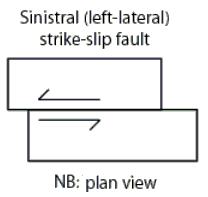
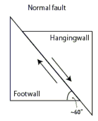
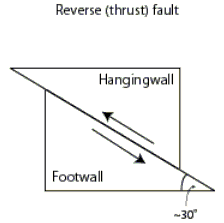
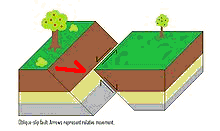

Fault types
A fault is a surface across which there has been motion.
The forces at any point can be resolved into three orthogonal principal
stresses (σ), and there will be no shear
stresses (τ) in that orientation.
While the forces will be 3D in nature, we can generally look at them in the
plane with the minimum and maximum principal stresses, and the intermediate
stress will come in/out of the page. You must be careful to understand if
you are looking at a plan (map) view, or a cross section.
In the earth, there is no tension below a very shallow depth in the
crust. This is fortunate, because like concrete, rocks are extremely
weak in tension but very strong in compresssion. To a rock exposed to
a very large
σmax
the much smaller
σmin
will provide the easy way out and the rock will extend in that direction
even though it is actually being squeezed infrom that direction.
| Fault type
|
Wikipedia Figure
|
σmax
|
σmin
|
Plate setting
|
Deformation
|
Earthquakes |
Beach ball diagram
(nodal planes) |
| Strike slip/Transform
Transcurrent versus
transform faults
|
 |
horizontal
|
horizontal
|
Conservative plate boundary
like San Andreas,
Ridge transforms
|
|
Major, for
example along the San Andreas Fault |
 |
| Normal
|

Cross section view |
vertical
|
horizontal
|
Mid Ocean Ridges,
Basin and Range
|
Extend and thin crust
Younger on older rocks
Omits section
|
Generally
minor, especially along ridges with hot, young
(and weak) crust, and nothing to be damaged |
 |
| Reverse/thrust
|

Cross section view |
horizontal
|
vertical
|
Subduction zones, fold and thrust belts
|
Shorten and thicken crust
Older on younger rocks
Duplicates section
|
Major
(include tsunamis)
Megathrusts are major hazard |
 |
| Oblique slip |

Block diagram view |
|
|
|
Combines
strike slip with either normal or reverse motion |
|
 |
The pattern of first arrivals of the earthquake waves (compressional or extensional) allow creation of
two potential focal mechanisms ("beach balls"). These divide a sphere into 4 quadrants, with black showing compression and white extension. Two focal planes divide the quadrants, and one of these will be the fault plane. The seismic waves do not differentiate among the two, but examination of the local geology can often reveal which is the fault plane.
For pure normal and thrust faults, the two focal planes will have the same
strike.
 |
For a strike slip fault, the beach ball will indicate whether
the fault is right or left lateral. The motion will be toward
the black back (compressional) quadrant.
On the left, it will be a left lateral fault (stand at the fault plane facing
the other side, and you would have to go to the left to find the
offset features). It is right lateral for the case on the
right,
and the earthquake data alone does not allow selection of the fault
plane, which requires additional information. For a strike
slip fault, the distribution of foreshocks and aftershocks will
usually align with the fault plane, and the mapped orientation of
faults in the region will also often help to pick the correct plane.
For a thrust fault, particularly in a subduction zone, the gently
dipping plane is generally the fault surface. |
Last revision 4/1/2019